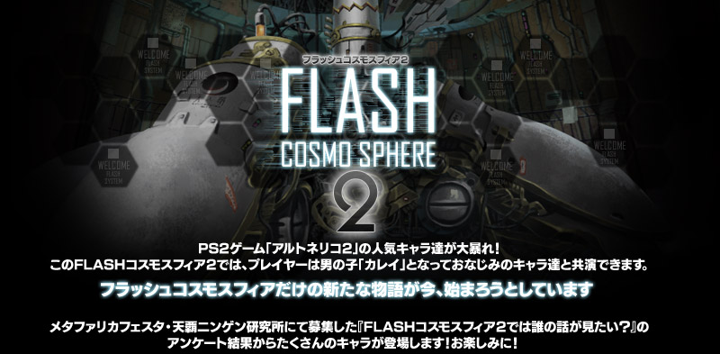
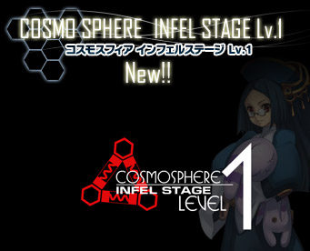
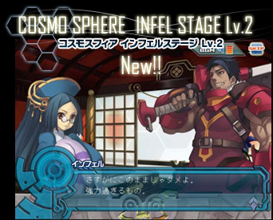
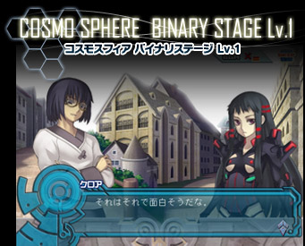
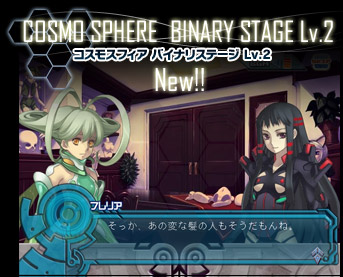
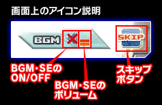

|  | |||||||
|  |  | ||||||
| 『インフェルステージ Lv.2』をプレイするには『インフェルステージ Lv.1』クリア後に表示されるパスワードが必要になります。 | |||||||
|  |  | ||||||
| 『バイナリステージ Lv.2』をプレイするには『バイナリステージ Lv.1』クリア後に表示されるパスワードが必要になります。 | |||||||
|
●テキストウインドウをクリックすると先に進みます。 ●選択肢が出たら、選択肢をクリックしてください。 ●一度読んだテキストは、次から右上の「スキップ」ボタンで 飛ばせます。 ●音量を調節するときは、ＢＧＭアイコンのボリューム部分を クリックしてください。 ●消音するときは、ＢＧＭアイコンのスピーカー部分をクリック してください。 |
|||||||
|  | |||||||